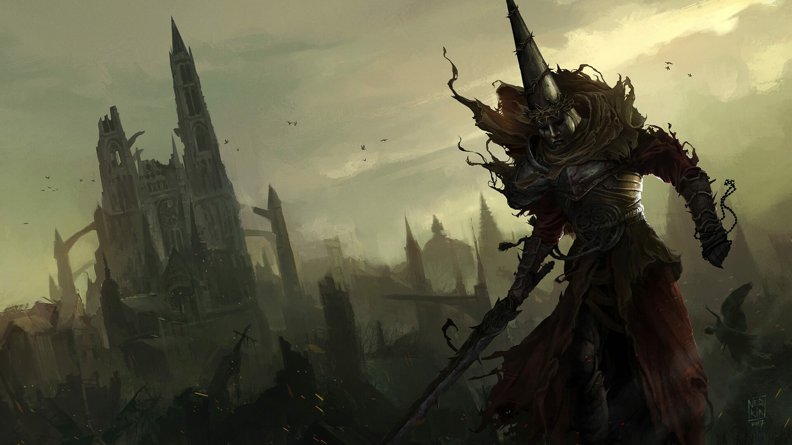
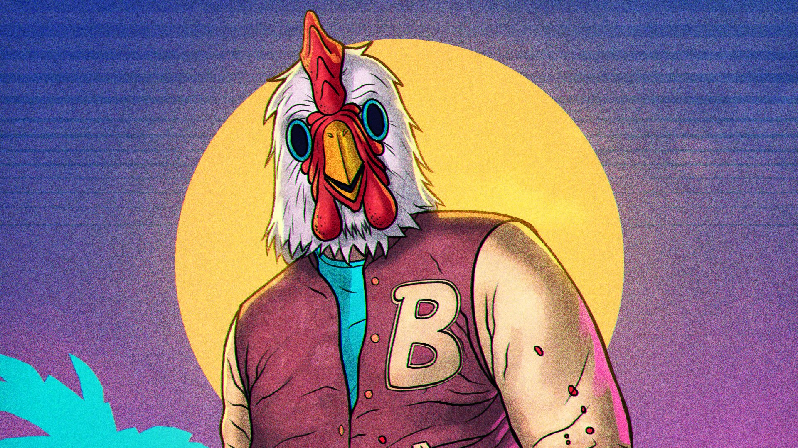
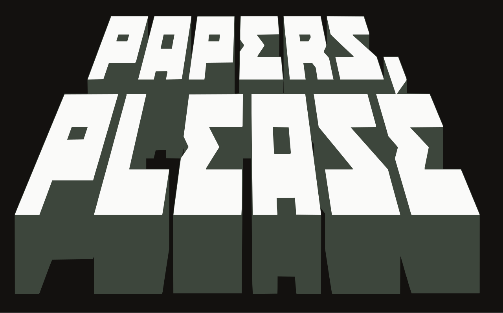
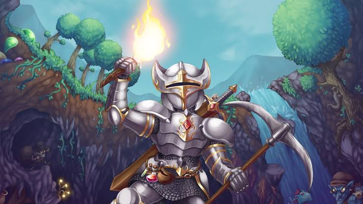
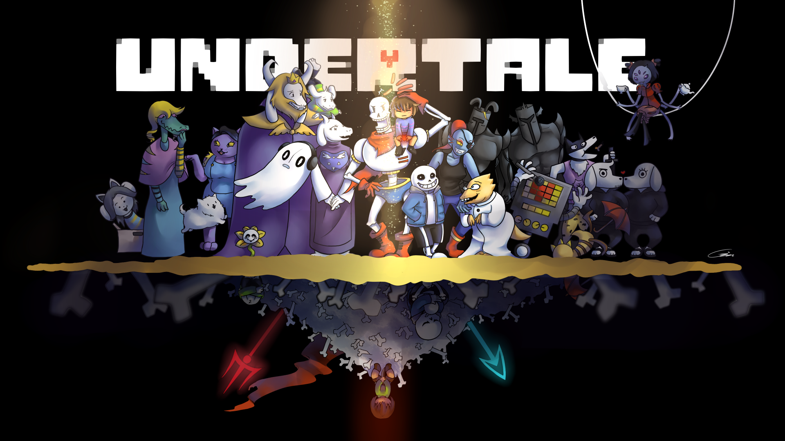

Blasphemous
https://store.steampowered.com/app/774361/Blasphemous/Blasphemous is a Metroidvania video game developed by Spanish studio The Game Kitchen and published by Team17. The game was released for Microsoft Windows, PlayStation 4, Xbox One, and Nintendo Switch on 10 September 2019, with Warp Digital handling the console ports. Versions for macOS and Linux were released on 21 September 2020.
.jpg)
Blasphemous 2
https://store.steampowered.com/app/2114740/Blasphemous_2/Blasphemous 2 is a side-scrolling Metroidvania video game developed by The Game Kitchen and published by Team17. The sequel to Blasphemous (2019), it was released for Microsoft Windows, Nintendo Switch, PlayStation 5 and Xbox Series X/S in August 2023 and for PlayStation 4 and Xbox One in November 2023. The game received generally positive reviews upon release.

Hotline Miami
https://store.steampowered.com/app/219150/Hotline_Miami/Hotline Miami is a 2012 top-down shooter game developed by Dennaton Games and published by Devolver Digital. Set in Miami in 1989, the game follows an unnamed silent protagonist—dubbed Jacket by fans—as he commits massacres against the local Russian mafia. In each level, the player must defeat every enemy through any means necessary, with wearable animal masks providing the player with unique abilities.

Papers Please
https://store.steampowered.com/app/239030/Papers_Please/In Papers, Please, the player takes the role of a border-crossing immigration officer in the fictional dystopian country of Arstotzka, which maintains a longstanding state of mutual political hostility with its neighboring countries. The player must review travelers' passports and other supporting paperwork against an ever-growing list of rules using a number of tools and guides. Tasks include allowing in those with the proper paperwork while rejecting those without all proper documents, detaining those with falsified information, and balancing personal finances.

Terraria
https://store.steampowered.com/app/105600/Terraria/Terraria is a 2011 action-adventure video game developed and published by Re-Logic. As a sandbox game, Terraria has no set goals. After creating the player character and choosing the game's difficulty, the player is placed in a two-dimensional, procedurally generated world where they explore, fight enemies, gather resources, and craft equipment.

Undertale
https://store.steampowered.com/app/391540/Undertale/Undertale is a 2015 role-playing video game created by American indie developer Toby Fox. The player controls a child who has fallen into the Underground: a large, secluded region under the surface of the Earth, separated by a magical barrier. The player meets various monsters during the journey back to the surface, some of which may engage in combat